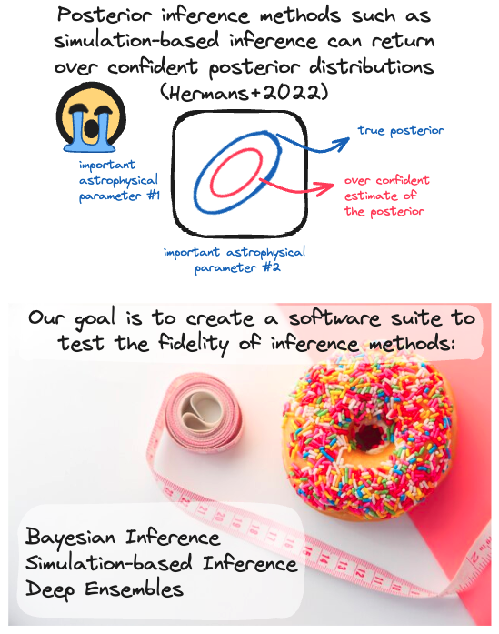

machine learning research
galaxy research
news
science communication
writing
talks
stickers
about me
resume and cv
Testing the fidelity of uncertainty predictions from machine learning inference methods
With great machine learning power comes great responsibility.
One of my roles in the Deepskies group is to develop and test tools for benchmarking and assessing uncertainty predictions from machine learning methods. 
DeepUQ Github: https://github.com/deepskies/DeepUQ/tree/main
DeepDiagnostics: Software for assessing the quality of inference
Flexible benchmark datasets for machine learning research
In order to evaluate the performance of ML tools for inference, I rely upon benchmark datasets.
In Deepskies lab, we have developed our own benchmark utilities (DeepBench),
which produces simple astrophysical objects in a flexible framework that allows the user to control the noise properties.
Using simple tools like a pendulum with stochastic noise,
I am creating a methodology for comparing the bias and uncertainty in parameter estimation from various inference techniques. This type
of simple dataset also allows me to experiment with comparing hierarchical to non-hierarchical inference paradigms (below).

DeepBench Github: https://github.com/deepskies/DeepBench
Hierarchical Bayesian inference and simulation based inference (SBI)
Hierarchical inference is an important tool for estimating parameters of individual data units as well as global parameters. This is especially relevant to estimating cosmological parameters, for instance in the case of multiple strong lenses in an all sky imaging survey; the goal is to estimate the individual lens parameters as well as global cosmological parameters.
Using the above uncertainty framework, I compare various state-of-the-art inference techniques such as hierarchical inference (sampling) and simulation based inference.
 ^Using the benchmark pendulum dataset to compare the performance of hierarchical sampling and SBI.
^Using the benchmark pendulum dataset to compare the performance of hierarchical sampling and SBI.
Harnessing machine learning to improve Chandra HRC
I have worked closely with Chandra leadership to develop a machine learning framework, EVE, to distinguish between real X-ray events and background events (such as cosmic rays). An improved background identification technique is highly valued by the X-ray community, as it would greatly improve the S/N of future and archival Chandra observations. However, this is a huge challenge, as X-ray events are highly multi-dimensional (i.e., each event has information about the time of arrival, position, and energy) and we lack labelled synthetic data.

With EVE, I am pursuing a multi-pronged approach for background classification, using multiple options for machine learning algorithms such as a supervised random forest and a semi-supervised bagging classifier that learns from X-ray observations on the fly. The figure above shows an example of the semi-supervised technique assigning probability values to events.